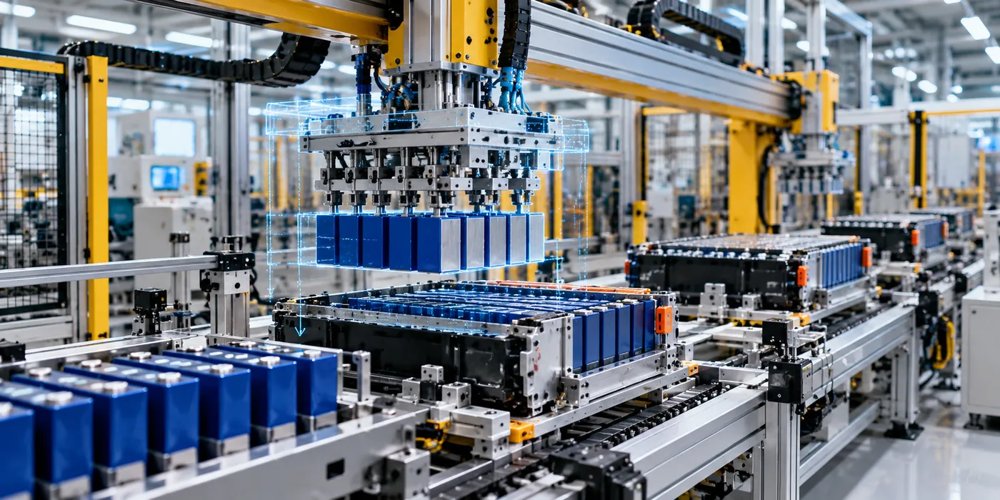

The Assignment
A battery manufacturing programme required the engineering and development of production tooling for an automated battery module assembly line.
The objective was to develop manufacturing solutions that could support automated cell stacking, handling and sorting operations while integrating the required tooling, gantry systems, grippers and workstations into an efficient production environment.
The programme required close coordination between mechanical engineering, automation requirements and digital manufacturing to ensure that the proposed production tools were suitable for the battery module assembly process.
Our Approach
CS TECH Ai provided manufacturing engineering support covering the design and development of production tools and automated handling systems for battery module assembly.
The engagement included:
- Mechanical design, simulation and production detailing
- Engineering of automated cell stacking, handling and sorting solutions
- Design and development of gantry systems
- Gripper design and engineering
- Workstation and production-tool engineering
- Integration of tooling with automated manufacturing processes
- Digital design and simulation to support manufacturing engineering
- Engineering documentation and production detailing
- Design validation to support manufacturing readiness
- Coordination of production-tool development across the engineering programme
The use of digital engineering and simulation enabled production concepts and tooling to be developed and evaluated before implementation, supporting a more structured approach to manufacturing readiness.